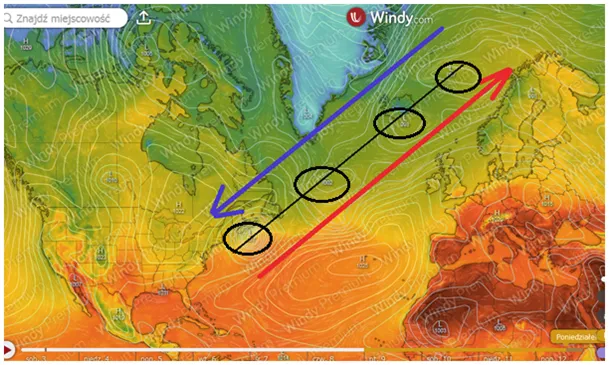
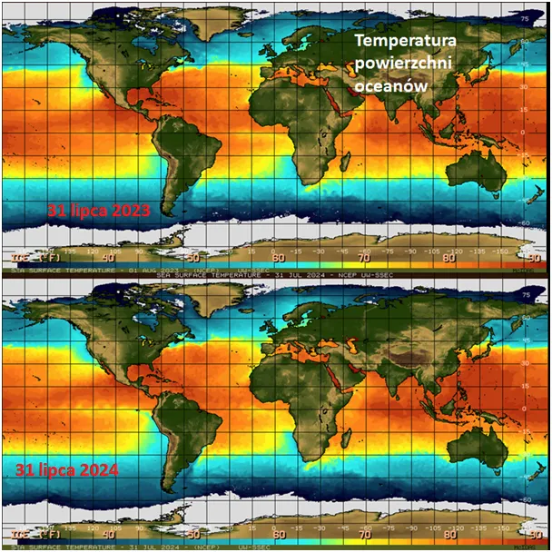
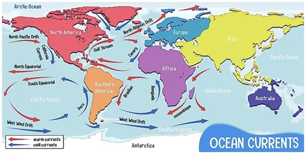

Robi się ciekawie, Arktyka kontra tropiki.
To może być wyjątkowy rok. Prognoza na ponad tydzień pokazuje wyjątkowy układ niżów, z których ten najbliżej równika będzie w fazie cyklonu. Cztery niże ustawione na jednej linii wzdłuż trasy ciepłego Prądu Zatokowego stworzą dwie autostrady dla przepływu powietrza w wyjątkowym tempie.

Arktyczne, zimne i suche powietrze błyskawicznie dotrze do Ameryki Północnej, a ciepło znad zwrotnika trafi za koło podbiegunowe omijając Europę. Dalsze prognozowanie nie ma sensu i nikt rozsądny tego nie robi, bo i ten układ może się okazać fałszywy, ale mamy ciekawą zagadkę. Jest to bardzo silny czynnik mogący dać wczesną jesień.

Ponadto globalna sytuacja na oceanach jest zgodna z tym, co widzimy od kilkunastu lat, słabnąca aktywność Słońca daje spore ochłodzenie wschodniego Pacyfiku. Na lewo od Chile mamy blisko równika bardzo silny zimny Prąd Peruwiański płynący od samej Antarktydy. W okolicach Kalifornii i Meksyku też znacznie zimniej niż rok temu, o przymrozkach w Buenos Aires i na Indonezji już pisałem tydzień temu.

Zachodnia i Wschodnia Afryka oraz Półwysep Arabski otoczone chłodniejszymi wodami niż rok temu. W okolicy Sydney zimne wody też kilkaset km bliżej zwrotnika niż zwykle. Za dużo tego na raz, aby nazywać to lokalnymi anomaliami.
Paweł Klimczewski